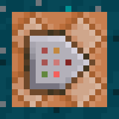
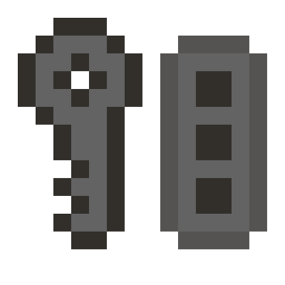

Star Wars Mod
My "Star Wars: Clone Wars" Minecraft Mod
Forge 1.16.5
The Wild Update Mod
A Mod to add the 1.19 features to Minecraft now
Fabric 1.17.1
Pyrix Resourcepack
My official resourcepack, vanilla style + some 3D tweaks and some custom items for the datapack

More Totems datapack
A datapack (for vanilla Minecraft) that adds more mob totems, they drop from the respective mob and the have custom effects and drops

Password Manager
Password manager gives you the ability to
store all your passwords in one safe place.
It is portable, for x86_64 cpu architectures.
The first time you open it, it will generate a key,
that will be stored encrypted with a default one.
Every account will be encrypted with your key and stored in a file,
if someone steals it from you, the file alone will be useless.
View animation
Backup Tool
With Backup tool you can create backups of your important folders
(even compressed backups) giving them a custom name, and then, if
something goes wrong, you can restore your backups (even
compressed ones)! With "Presets_tool.exe" you create the preset
(Name, source and destination), then opening "Backup_tool.exe" you
will see it, give your backup an unique name (very important), choose
if compress or not and then clic "Create backup", if something goes
wrong just select your backup folder or .zip and restore it!
View animation